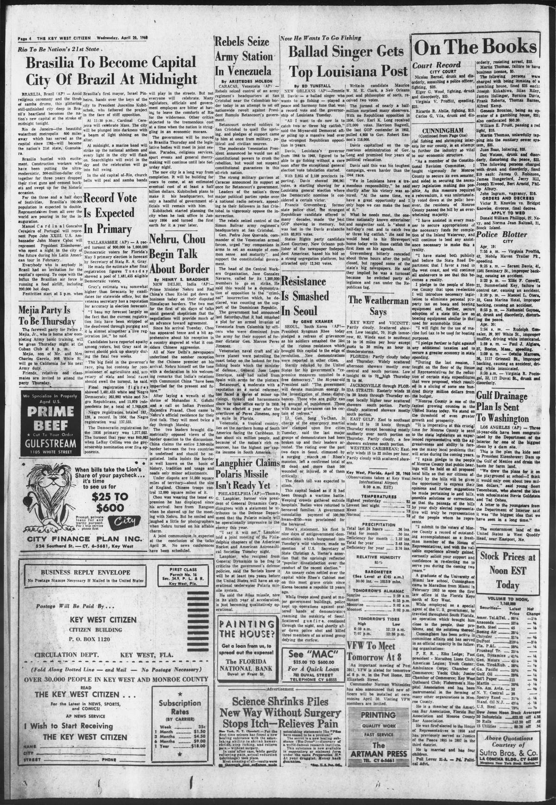

Rebels SeizeLos rebeldes se apoderan
The Key West Citizen. Key West, Fla., April 20, 1960. Page 4. Published by Citizen Pub. Co. A daily newspaper.The Key West Citizen. Key West, Fla., 20 de abril de 1960. Página 4. Publicado por Citizen Pub. Co. Periódico diario. View the originalVer el original

The Key West Citizen reported that Venezuelan labor leader José González Navarro called a nationwide strike to support President Rómulo Betancourt against an insurrection backed by supporters of Marcos Pérez Jiménez. Venezuelan authorities mobilized naval and air patrols to intercept arms shipments and thwart invasion plots allegedly supported by the Dominican Republic.The Key West Citizen informó que el líder obrero venezolano José González Navarro convocó a una huelga nacional en respaldo al presidente Rómulo Betancourt contra una insurrección respaldada por adeptos de Marcos Pérez Jiménez. Las autoridades venezolanas movilizaron patrullas navales y aéreas para interceptar envíos de armamento y desmantelar complots de invasión presuntamente patrocinados por la República Dominicana.
FULL TEXT:TEXTO COMPLETO:
The Key West Citizen April 20, 196020 de abril de 1960
Rebels SeizeRebeldes se apoderan
Army StationDe una estación del ejército
In VenezuelaEn Venezuela
By ARISTEDES MOLEONPor ARISTEDES MOLEON
CARACAS, Venezuela (AP) — Rebels seized control of an army regiment’s headquarters at San Cristobal near the Colombian border today in an attempt to set off nationwide revolt against President Romulo Betancourt’s government.CARACAS, Venezuela (AP) — Rebeldes se apoderaron hoy del control de la sede de un regimiento del ejército en San Cristobal cerca de la frontera colombiana en un intento de desencadenar una revuelta nacional contra el gobierno del presidente Romulo Betancourt.
Betancourt ordered soldiers to San Cristobal to quell the uprising, and pledges of support came to him at once from military, political and civilian sources.Betancourt ordenó soldados a San Cristobal para sofocar el levantamiento, y promesas de apoyo le llegaron de inmediato de fuentes militares, políticas y civiles.
The moderate Venezuelan President announced he would use all constitutional powers to crush the rebellion, but would not suspend constitutional guarantees in this oil-rich nation.El moderado presidente venezolano anunció que usaría todos los poderes constitucionales para aplastar la rebelión, pero que no suspendería las garantías constitucionales en esta nación rica en petróleo.
The strong military garrison at Caracas announced its support at once for Betancourt’s government.La fuerte guarnición militar de Caracas anunció su apoyo de inmediato al gobierno de Betancourt.
Leaders of the nation’s three major political parties spoke over a national radio network, appealing to their followers in San Cristobal to vigorously oppose the insurrection.Líderes de los tres principales partidos políticos de la nación hablaron por una red nacional de radio, apelando a sus seguidores en San Cristobal a oponerse vigorosamente a la insurrección.
The rebels seized control of the Simon Bolivar army regiment’s headquarters at San Cristobal.Los rebeldes se apoderaron del control de la sede del regimiento del ejército Simon Bolivar en San Cristobal.
Gen. Pedro Jose Quevado, commander of the Venezuelan armed forces, urged “my companions in arms to set an example of common sense and maturity” and support the constitutional government.El General Pedro Jose Quevado, comandante de las fuerzas armadas venezolanas, urgió a «mis compañeros de armas a dar un ejemplo de sentido común y madurez» y apoyar al gobierno constitucional.
The head of the Central Workers Organization, Jose Gonzalez Navarro, called for its 1,200,000 members to go on strike. He said this would be a demonstration of opposition to the “criminal” insurrection which, he declared, was counting on the support of the Dominican Republic.El jefe de la Organización Central de Trabajadores, Jose Gonzalez Navarro, llamó a sus 1,200,000 miembros a ir a la huelga. Dijo que esto sería una demostración de oposición a la insurrección «criminal» que, declaró, contaba con el apoyo de la República Dominicana.
The government had announced last Saturday that it had smashed a plot for an armed invasion of Venezuela from Colombia by officers who were dismissed from the army for their support of former dictator Gen. Marcos Perez Jimenez.El gobierno había anunciado el sábado pasado que había desbaratado una conspiración para una invasión armada de Venezuela desde Colombia por oficiales que fueron despedidos del ejército por su apoyo al antiguo dictador General Marcos Perez Jimenez.
Venezuelan naval craft and air force planes were patrolling the coast today on the lookout for two fishing boats which the minister of defense, General Jose Lopez Henrique, said had sailed from Spain with arms for the plotters.Embarcaciones navales venezolanas y aviones de la fuerza aérea patrullaban la costa hoy en busca de dos barcos pesqueros que el ministro de defensa, General Jose Lopez Henrique, dijo habían zarpado de España con armas para los conspiradores.
Betancourt, a moderate with a reputation as a social reformer, has faced a series of minor uprisings, threats and harassments since he took office early in 1959. He was elected a year after the overthrow of Perez Jimenez, now in exile in Florida.Betancourt, un moderado con reputación de reformador social, ha enfrentado una serie de levantamientos menores, amenazas y hostigamientos desde que asumió el cargo a principios de 1959. Fue elegido un año después del derrocamiento de Perez Jimenez, ahora en exilio en Florida.
Venezuela, a tropical country, lies on the northern hump of South America facing the Caribbean. It has about six million people, and because of the nation’s rich resources, has the highest per capita income in South America.Venezuela, un país tropical, yace sobre la joroba norteña de América del Sur frente al Caribe. Tiene unos seis millones de personas, y a causa de los ricos recursos de la nación, tiene el ingreso per cápita más alto de América del Sur.